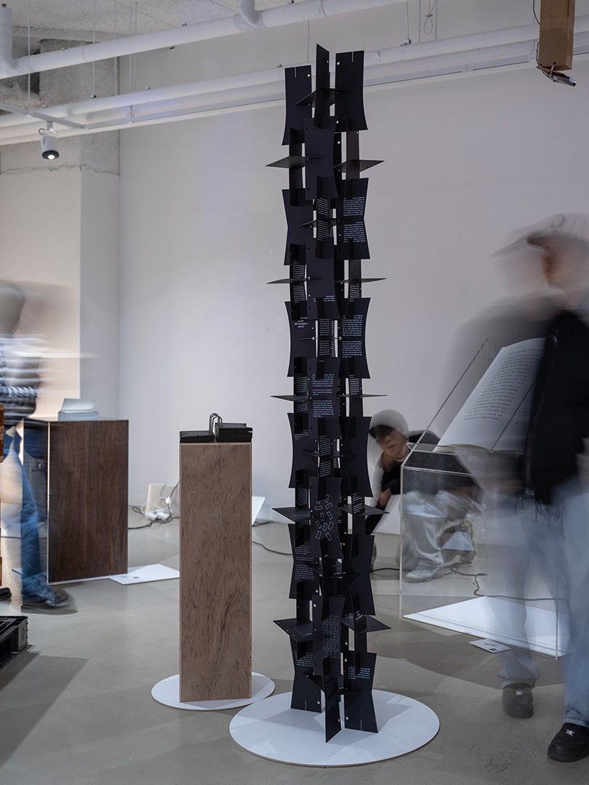

Bookulpture (2023)
Graphic Design, Book Design, Editorial Design, Sculpture
The boundary between graphic design and sculpture, has become blurred.
Graphic design, once confined to flat surfaces, has rapidly expanded area not only to websites,
and virtual reality, often referred to as sculptures.
This raises the question: where does graphic design end, and where does sculpture begin?
The BOOKULPTURE aims to explore this elusive boundary between graphic design and sculpture
by combining the two into a single form - a book and sculpture simultaneously.
그래픽 디자인, 책 디자인, 편집 디자인, 조각

